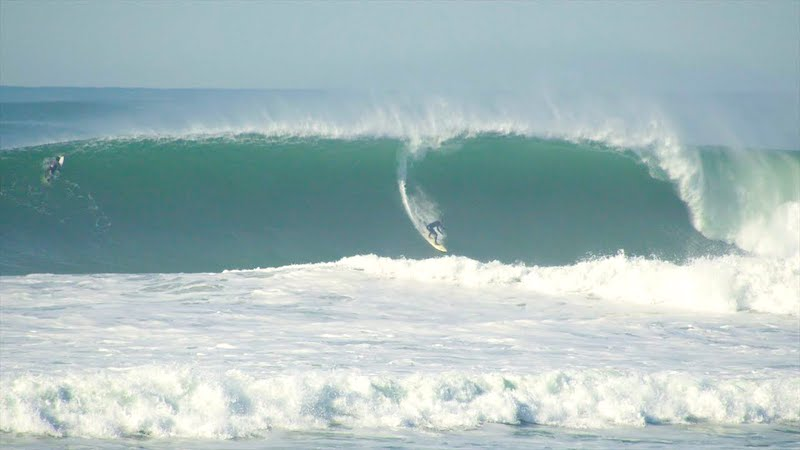

Ocean Beach
... is one of the Bay Areas top surfing spots and when breaking well, can be world class, especially during large swells in the winter months. But due to these powerful conditions, Surfers and swimmers have died at Ocean Beach.
